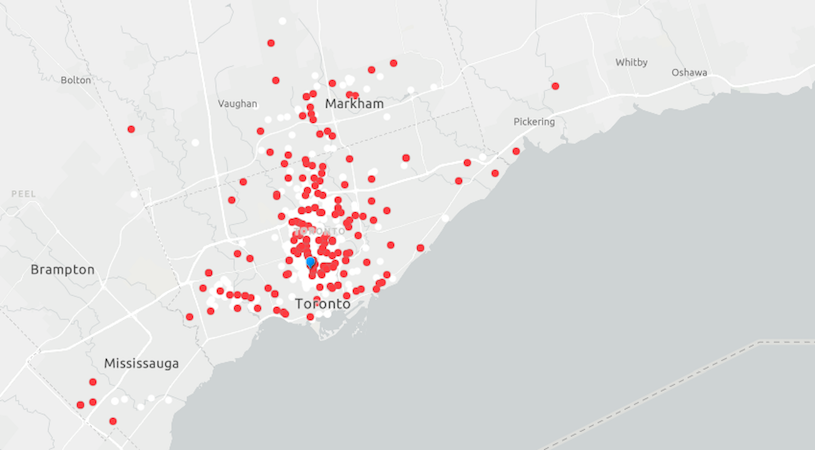
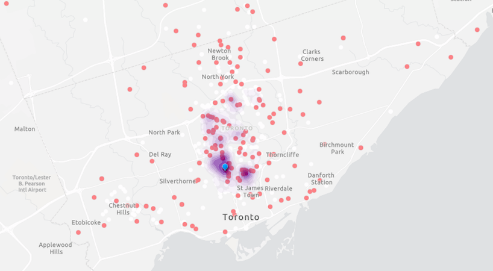
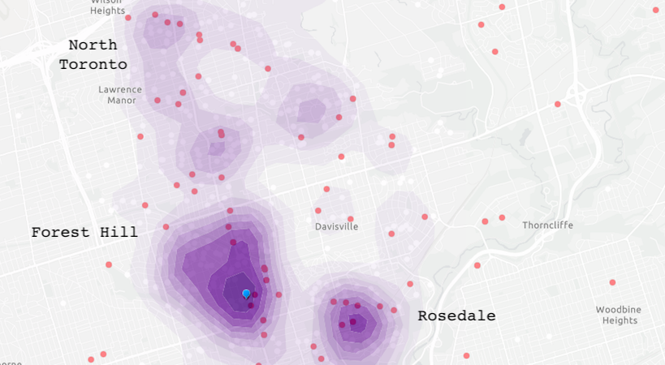
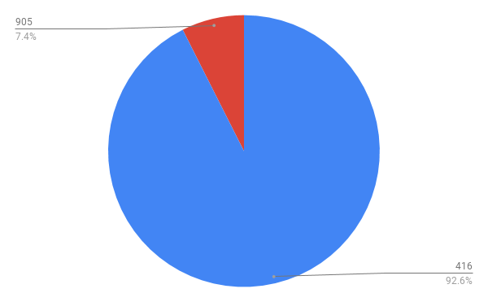

UCC Day Boys 2019
These maps and graphs depict the distribution of UCC day boys in 2018-19.
UCC is a regional school
Figure 1: UCC is a Regional School

UCC day boys come from all over the GTA. FA students (red) mimic the overall distribution.
UCC student density hotspots
Figure 2: Central Toronto density hot spots

Student distribution is most dense in central Toronto neighbourhoods.
UCC is a local school (FA and Stardard enrollment)
Figure 3: UCC is a local school

There are many FA boys in traditional UCC neighbourhood hot spots
UCC day boys are 7.4% 905ers
Figure 3: Area code distribution
